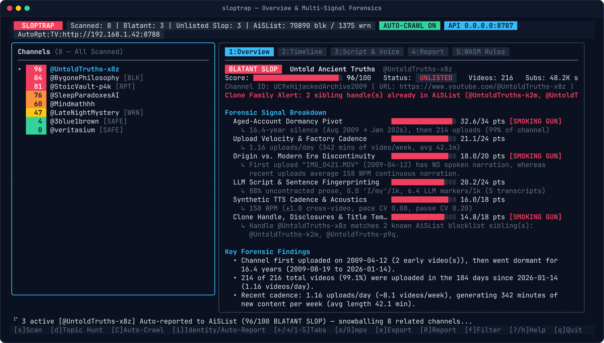

Define, tokenize, and compile WebAssembly slop rules across platforms
SlopTrap is a rule definition studio and sandboxed WebAssembly (.strule) runtime for YouTube, TikTok, Pinterest, and custom platforms. Load known slop samples alongside clean controls, derive matching clauses, promote thresholds and patterns into reusable $tokens, and export cryptographically signed WASM bundles.
git clone git@github.com:sloptrap/sloptrap.git
cd sloptrap
npm install
# Run in any web browser (Vite + WebAssembly)
npm run dev
# Or launch native desktop app (Tauri v2 + live URL scraper)
npm run tauri devKnown content corpus
step 1Load known slop accounts, clip farms, or synthetic pinboards alongside clean human controls to verify true-positive and false-positive separation live.
Value & pattern tokenization
$tokensPromote any numeric threshold, ramp span, weight, or phrase list into a named $token so sliders recompile and re-score the entire corpus in microseconds.
Verified build provenance
verifiedOfficial maintainer keys and community rules pinned to an inspected source repository commit and GitHub Actions build earn Verified badges.
Dormancy & cadence signals
cadenceCaptures multi-year account dormancy hijacks, post-pivot catalog shares, daily upload/pin bursts, and cookie-cutter duration or aspect-ratio locks.
LLM prose & SEO stuffing
textScores uncontracted written prose, contrastive antithesis, formulaic retention hooks, and hashtag/keyword-stuffed captions or pin descriptions.
TTS prosody & synthetic visuals
mediaMeasures metronomic TTS word-pacing CV, -65dBFS dead-air floors, diffusion image signatures, repost watermarks, and outbound domain funnels.
| # | Rule | Provenance | Band / F1 | Active (30d) | All-Time | Overhead | Artifact |
|---|---|---|---|---|---|---|---|
| Loading leaderboard… | |||||||
